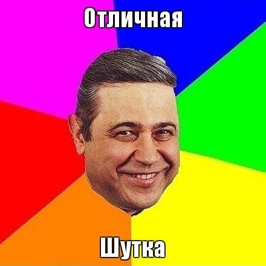

Новый литературный конкурс «Мысли о весне»
"Она вышла из душа, встала перед ним и, смущаясь, лёгким движением плеч сбросила с себя полотенце. На секунду он оторопел от открывшейся ему красоты, а потом упал перед девушкой на колени, и его губы принялись жадно осыпать кожу возлюбленной поцелуями. Она выгнулась, возбуждённо дыша и закрывая глаза, пальцами впившись в его плечи, боясь упасть от нахлынувшего наслаждения".
"Он выглянул из-за угла, прищурился, разглядывая столпившихся у входа в школу одноклассников. Она стояла рядом с подругой и смеялась, отчего косички, спускавшиеся на её плечи, подскакивали. Набравшись смелости, он вышел к ним и твёрдой походкой направился к девчонке.
- Эй, Сидорова, у тебя шнурки развязались! - бойко сообщил он.
Она посмотрела сначала вниз, на туфли, шнуровки на которых никогда и не было, потом на него - снисходительно, свысока:
- Не смешно, - отрезала она, отвернулась и вместе с подругой отправилась в школу."

В разгаре весна - пора любви! Весной хочется петь и делать подарки тем, кто дорог, хочется делиться счастьем, хочется взаимности, хочется отношений и... секса. А с другой стороны, хочется веселья и шуток, хочется подкалывать друзей и устраивать розыгрыши над незнакомыми.
На этот раз у конкурса две темы: одна щекотливая и жаркая, как майское солнце, и вторая, от которой хочется смеяться до слёз. VC в лице организатора конкурса при поддержке готического клуба ВампШоп.Ру предлагает написать рассказ, щедро (или не очень - на вкус автора) приправленный эротическими подробностями либо рассказ, в котором будет самый эпический юмор.
И пусть приз достанется самому откровенному или весёлому!
Дерзайте и удачи!
К участию в конкурсе допускаются рассказы:
- не публиковавшиеся нигде ранее;
- объёмом 5-30 тысяч знаков с пробелами;
- на любую тему, не важно, о вампирах или нет, героями могут быть и обычные люди;
- обязательно наличие эротической/любовной сцены или розыгрыша/шутки.
Сроки приёма работ: с 5 апреля по 3 мая. 4-5 мая будет сформирован список участников, и их работы будут опубликованы на форуме без указания авторства. Голосование будет проводиться в виде опроса силами участников форума.
Голосование продлится до 31 мая, и 1 июня будет оглашён победитель.
Рассказы следует присылать на электронную почту energosanga@vampirecommunity.ru , в теме письма указывать «На конкурс».
Внимание!
Победитель получит эксклюзивный подарок от спонсора нашего конкурса – готического клуба-магазина вампирских украшений и аксессуаров «ВампШоп».~RageBruxa.
[Наверх]